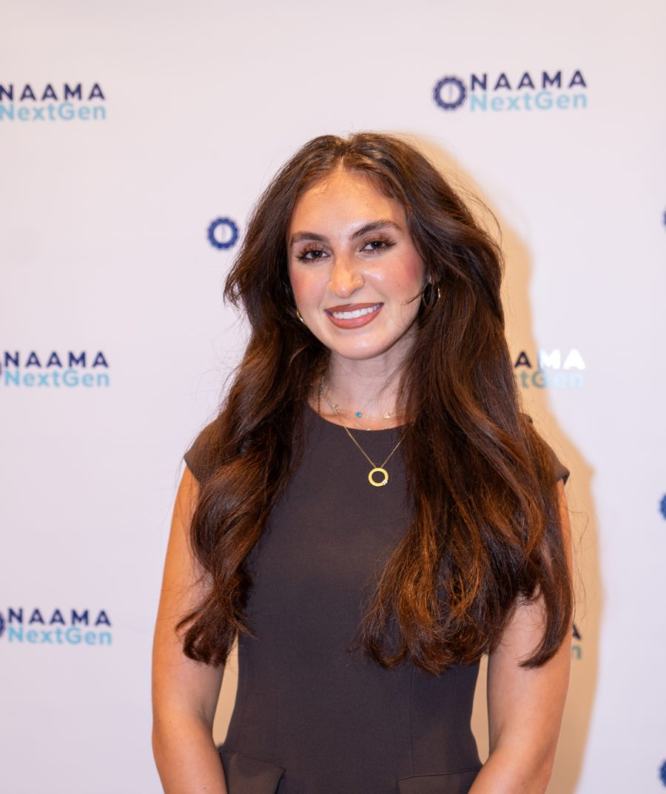

Kidney Consultants of Michigan
Redesigned and relaunched a nephrology practice's website: mobile-first, with patient-portal access and one clear page for 30+ clinic, hospital, dialysis and transplant locations.
Engineer · Researcher · Athlete
I'm a software engineer turned clinical researcher. After two years building data systems at Target, I now work in pathology research at Michigan Medicine, cleaning and analyzing clinical data and co-authoring cancer research.

What I do
Clinical research in digital pathology and cancer diagnostics at Michigan Medicine: Python data analysis, manuscripts, a funded grant, and a consortium spanning 25+ countries.
Research experience →Backend and data engineering at Target and Bosch: Kafka pipelines, PostgreSQL, automated testing, and tools that made other engineers faster.
Engineering experience →Marathon training, boxing and yoga, film and digital photography, travel, and four languages: Arabic, English, Spanish and French.
More about me →Selected publications
Selected projects
Redesigned and relaunched a nephrology practice's website: mobile-first, with patient-portal access and one clear page for 30+ clinic, hospital, dialysis and transplant locations.
A web interface and Flask API that gave Bosch teams remote access to hardware-in-the-loop benches for autonomous-vehicle simulation.